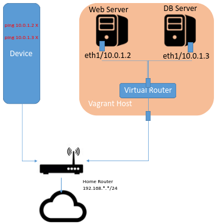
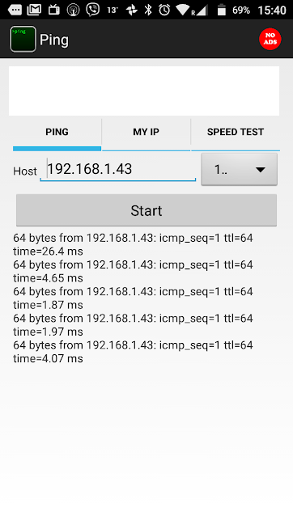
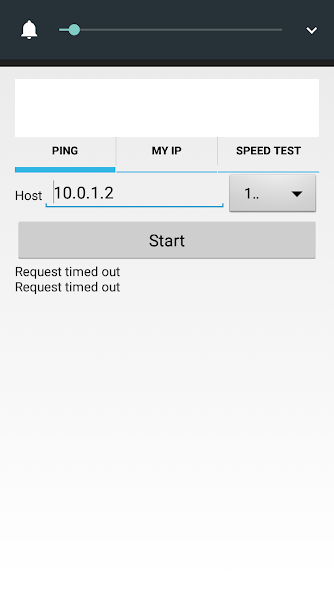
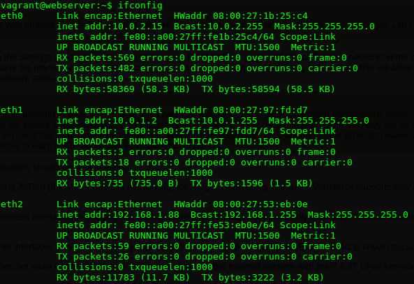
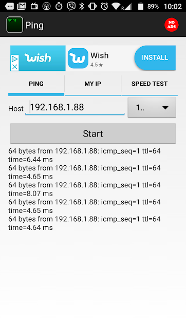

Use Vagrant to set up a simulated provate/public network topology.
In this lab, you will:
You will no create a virtual networking topology similar to the one you created in last weeks (week3) lab, including your home router. Although we are doing this lab "virtually", the concepts can be applied in any IP network. The lab assumes that Vagrant is running in the host laptop.
vagrant init to initialise it as a vagrant projectVAGRANTFILE_API_VERSION = "2"
Vagrant.configure(VAGRANTFILE_API_VERSION) do |config|
config.vm.define "WebServer" do |pc0|
pc0.vm.hostname = "WebServer"
pc0.vm.network :private_network, ip: "10.0.1.2", :netmask => "255.255.255.0"
end
config.vm.define "DBServer" do |pc1|
pc1.vm.hostname = "DBServer"
pc1.vm.network :private_network, ip: "10.0.1.3", :netmask => "255.255.255.0"
end
config.vm.box = "frankwalsh/labvm"
config.ssh.forward_x11 = true
endStart the virtual environment in the usual way:
$ vagrant upThe Vagrantfile will create the following network topology consisting of two linux machines connected using a private network (10.0.1.0/24).

ping 10.0.1.2
ping 10.0.1.3Both should respond successfully as before.
You will now try to interact with these machines from another device on your home network, for example you Smart Phone.
In the previous slide, you pinged both VMs successfully from your host machine. Now try the same from another device on your LAN. This can be and device capable of issuing an ICMP request such as:
Download an app that allows you to ping devices on your LAN. The following are available for free (iPhone app not tested with this lab):
Now find the IP address of the host machine, the machine that is running Virtualbox and hosting your VMs(probably your laptop).

$ vagrant ssh WebServer
Welcome to Ubuntu 14.04.5 LTS (GNU/Linux 3.13.0-144-generic x86_64)
.
.
.
.
vagrant@webserver:~$ ifconfig
eth0 Link encap:Ethernet HWaddr 08:00:27:1b:25:c4
inet addr:10.0.2.15 Bcast:10.0.2.255 Mask:255.255.255.0
inet6 addr: fe80::a00:27ff:fe1b:25c4/64 Scope:Link
UP BROADCAST RUNNING MULTICAST MTU:1500 Metric:1
RX packets:594 errors:0 dropped:0 overruns:0 frame:0
TX packets:495 errors:0 dropped:0 overruns:0 carrier:0
collisions:0 txqueuelen:1000
RX bytes:61789 (61.7 KB) TX bytes:58920 (58.9 KB)
eth1 Link encap:Ethernet HWaddr 08:00:27:97:fd:d7
inet addr:10.0.1.2 Bcast:10.0.1.255 Mask:255.255.255.0
inet6 addr: fe80::a00:27ff:fe97:fdd7/64 Scope:Link
UP BROADCAST RUNNING MULTICAST MTU:1500 Metric:1
RX packets:5 errors:0 dropped:0 overruns:0 frame:0
TX packets:18 errors:0 dropped:0 overruns:0 carrier:0
collisions:0 txqueuelen:1000
RX bytes:1225 (1.2 KB) TX bytes:1596 (1.5 KB)
lo Link encap:Local Loopback
inet addr:127.0.0.1 Mask:255.0.0.0
inet6 addr: ::1/128 Scope:Host
UP LOOPBACK RUNNING MTU:65536 Metric:1
RX packets:16 errors:0 dropped:0 overruns:0 frame:0
TX packets:16 errors:0 dropped:0 overruns:0 carrier:0
collisions:0 txqueuelen:0
RX bytes:1184 (1.1 KB) TX bytes:1184 (1.1 KB)
Before going any further, try to explain why you cannot "see" the web server VM outside the host.
At the moment it's not possible to access any of your VMs from external devices on your LAN at home.
We would like the web server to be accessible from external networks, if only to access web resources. However, we'd like the DBServer to remain isolated and only accessible from the private network. Furthermore, it should not be possible to access external networks or the internet from the DBServer.
To allow access to the WebServer, you can add a public network interface. This will create a bridged network(remember Week 2, virtualisation) such as the Web Server will appear like any other host on the LAN. It's worth saying, do not confuse this public network with the public IP network - it's just what Vagrant uses to describe bridging using the host interface.
You will separate the DB Server and Web Server into different subnets. A reason for this might be to separate them into different administrative networks due to access and security requirements(we will not concern ourselves with this here!). We can subnet the 10.0.1.0/24 network into: 10.0.1.0/25 10.0.1.126/25
Update the Vagrantfile to include the public network and new subnet configuration highlighted below:
VAGRANTFILE_API_VERSION = "2"
Vagrant.configure(VAGRANTFILE_API_VERSION) do |config|
config.vm.define "WebServer" do |pc0|
pc0.vm.hostname = "WebServer"
pc0.vm.network :private_network, ip: "10.0.1.0", :netmask => "255.255.255.128"
# Public Network (bridged)
pc0.vm.network "public_network"
end
config.vm.define "DBServer" do |pc1|
pc1.vm.hostname = "DBServer"
pc1.vm.network :private_network, ip: "10.0.1.128", :netmask => "255.255.255.128"
end
config.vm.box = "frankwalsh/labvm"
config.ssh.forward_x11 = true
endDuring the update you may be asked to select the interface on your host machine you wish to use for bridging. Make sure to use the interface you're currently using to connect to your LAN and the Internet.
Once finished, SSH into the web server as before and check the interface configuration using ifconfig again. You should now have another interface on the machine that is on the same network as your host machine. Effectively you've created a new network interface in software that looks to the host system as though the Web Server VM is physically connected to the interface using a network cable. This means that you can connect between the Web Server VM and the rest of your network. Your interface config on the Web Server VM should look something similar to the following:

The Web server now has a (virtual) network interface on the hosts LAN and has baan assigned an address from the DHCP service on that LAN.
Now try to ping the Web Server VM from another device on your LAN using the IP address assigned to the bridged interface(eth2 in the above example). This time it should work.

You still will not be able to ping the DB Server as it is only connected to the private network.
To get the VM to act somewhat like a real web server, you can start a simple process that listens on port 80 on the Web Server VM and returns a simple HTML page.
Create a simple HTML page called index.html in the home directory of your Web Server VM
vagrant@webserver:~$ echo '<html><head><title>Web Server Test</title></head><body><h1>Hello from your Web Server VM!</h1></body></html>' > index.htmlUsing the netcat command, run a short script at the command line to listen for(-l) a connection on port 80 (-p) and return the index.html page.
vagrant@webserver:~$ while true; do echo -e "HTTP/1.1 200 OK\r\nContent-Type: text/html\r\n\r\n" | cat - index.html | sudo nc -l -p 80; doneThe DB server should be isolated from public networks. There should be no routing from external networks to the DB Server. Similarly, there is no need for external access from the DB Server to the internet (perhaps for security reasons).
vagrant@dbserver:~$ wget google.ie
--2018-10-02 10:09:51-- http://google.ie/
Resolving google.ie (google.ie)... 74.125.90.67, 2a00:1450:400b:803::2003
Connecting to google.ie (google.ie)|74.125.90.67|:80... connected.
HTTP request sent, awaiting response... 301 Moved Permanently
Location: http://www.google.ie/ [following]
--2018-10-02 10:09:51-- http://www.google.ie/
Resolving www.google.ie (www.google.ie)... 74.125.90.67, 2a00:1450:400b:803::2003
Reusing existing connection to google.ie:80.
HTTP request sent, awaiting response... 200 OK
Length: unspecified [text/html]
Saving to: 'index.html.1'
[ <=> ] 11,694 --.-K/s in 0s
2018-10-02 10:09:51 (22.4 MB/s) - 'index.html.1' saved [11694]As above, the web request for google.ie worked. This is because your DBServer VM is routed to the internet via the default gateway which is on the network used by vagrant to connect to your machine(10.0.2.0/24).
route command to view the IP routing table for the DB Server.vagrant@dbserver:~$ route
Kernel IP routing table
Destination Gateway Genmask Flags Metric Ref Use Iface
default 10.0.2.2 0.0.0.0 UG 0 0 0 eth0
10.0.1.128 * 255.255.255.128 U 0 0 0 eth1
10.0.2.0 * 255.255.255.0 U 0 0 0 eth0From the routing table you can see that all traffic for 10.0.1.128/23 is routed on interface eth1,traffic for 10.0.2.0/24 is routed to eth0, and all other IP traffic is routed to the default gateway 10.0.2.2(the ip address of the VirtualBox NAT router) on interface eth0.
The connection to this router via the 10.0.2.0/24 network is required for Vagrant to work properly. However, we can remove the default route entry in the routing table. This will prevent any traffic being routed to external public networks and will "simulate" an isolated DB Server. We can use the ip route command to manipulate the routing table of the VM.
- Remove the default route from the routing table of the DB Server
vagrant@dbserver:~$ sudo ip route del defaultvagrant@dbserver:~$ sudo ip route del default
vagrant@dbserver:~$ wget google.ie
--2018-10-02 10:28:05-- http://google.ie/
Resolving google.ie (google.ie)... 2a00:1450:400b:803::2003, 74.125.90.67
Connecting to google.ie (google.ie)|2a00:1450:400b:803::2003|:80... failed: Network is unreachable.
Connecting to google.ie (google.ie)|74.125.90.67|:80... failed: Network is unreachable.vagrant@dbserver:~$ sudo ip route add 10.0.1.0/25 via 10.0.2.2Now the DB Server cannot route to the internet however it is still possible to connect to devices on the Web Server network.
At the moment, all routing changes made here will be lost if you restart the VMs, or if you halt and restart this Vagrant project. To make sure the routing table changes happen every time you restart the Vagrant Project, you can put them in a script and include a reference to it in the Vagrantfile:
- Create a file called routing.sh in the vagrant project directory with the following contents:
#!/bin/sh
# update routing for DB Server
sudo ip route del default
sudo ip route add 10.0.1.0/25 via 10.0.2.2VAGRANTFILE_API_VERSION = "2"
Vagrant.configure(VAGRANTFILE_API_VERSION) do |config|
config.vm.define "WebServer" do |pc0|
pc0.vm.hostname = "WebServer"
pc0.vm.network :private_network, ip: "10.0.1.2/23", :netmask => "255.255.255.128"
# Public Network
pc0.vm.network "public_network"
end
config.vm.define "DBServer" do |pc1|
pc1.vm.hostname = "DBServer"
pc1.vm.network :private_network, ip: "10.0.1.130/23", :netmask => "255.255.255.128"
# Provision the DB Server by executing the routing.sh script
pc1.vm.provision :shell, path: "routing.sh"
end
config.vm.box = "frankwalsh/labvm"
config.ssh.forward_x11 = true
endNow stop and start the vagrant project and check that the DB Server does not route to the internet.